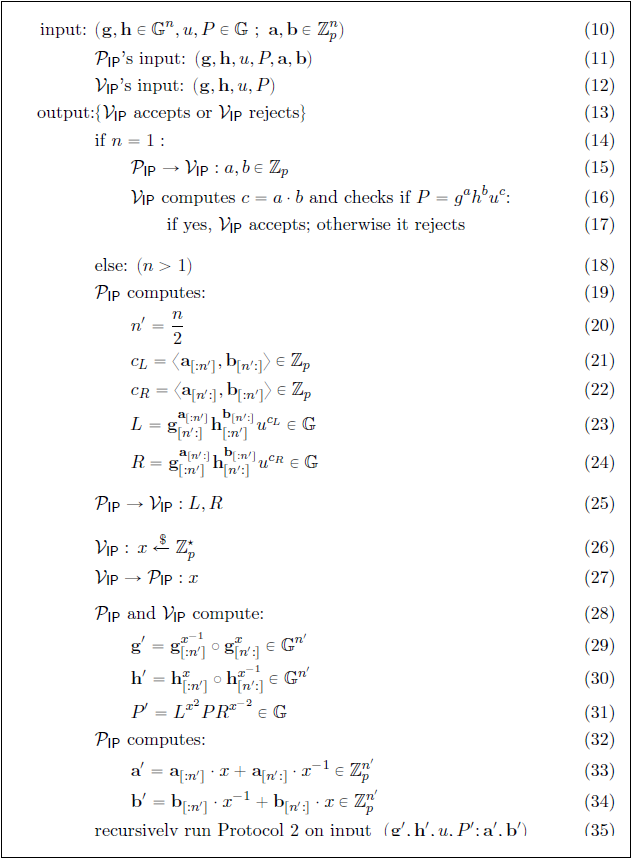
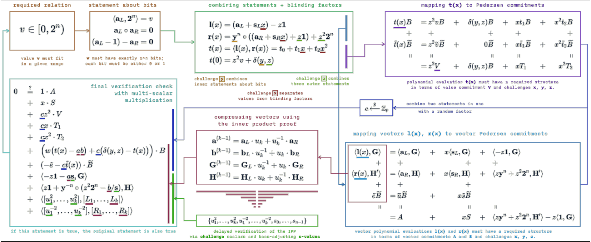
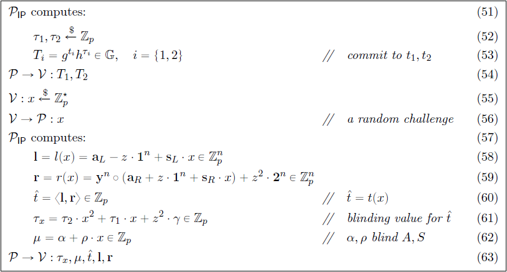
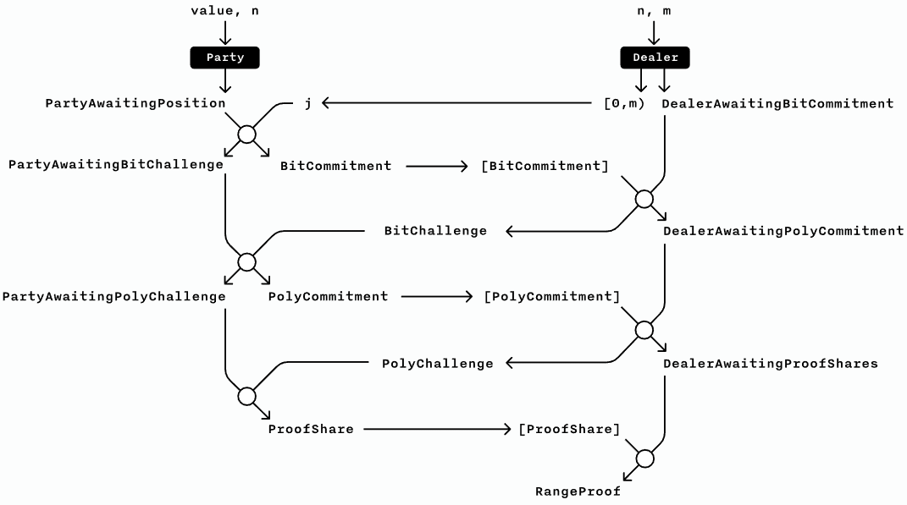
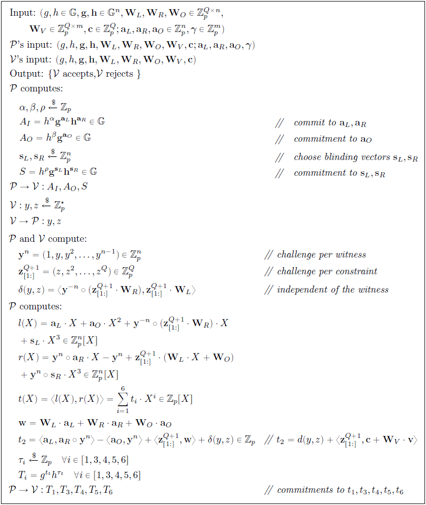
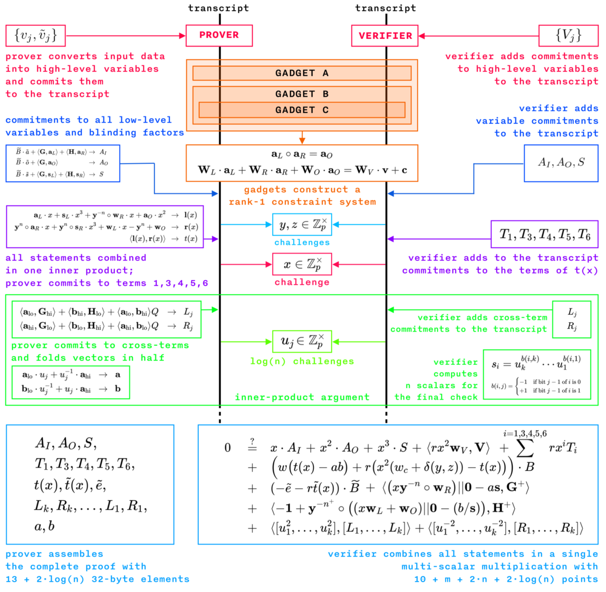

The Bulletproof Protocols
- Introduction
- Preliminaries
- Bulletproof Protocols
- Inner-product Argument (Protocol 1)
- How Proof System for Protocol 1 Works, Shrinking by Recursion
- Inner-product Verification through Multi-exponentiation (Protocol 2)
- Range Proof Protocol with Logarithmic Size
- Zero-knowledge Proof for Arithmetic Circuits
- Optimized Verifier using Multi-exponentiation and Batch Verification
- Evolving Bulletproof Protocols
- Conclusions, Observations and Recommendations
- References
- Appendices
- Contributors
Introduction
The overview of Bulletproofs given in Bulletproofs and Mimblewimble was largely based on the original work done by Bünz et al. [1]. They documented a number of different Bulletproof protocols, but not all of them in an obvious manner. This report summarizes and explains the different Bulletproof protocols as simply as possible. It also simplifies the logic and explains the base mathematical concepts in more detail where prior knowledge was assumed. The report concludes with a discussion on an improved Bulletproof zero-knowledge proof protocol provided by some community members following an evolutionary approach.
Preliminaries
Notation Used
This section gives the general notation of mathematical expressions when specifically referenced, based on [1]. This notation provides important pre-knowledge for the remainder of the report.
- Let $ p $ and $ q $ be large prime numbers.
- Let $ \mathbb G $ and $ \mathbb Q $ denote cyclic groups of prime order $ p $ and $ q $ respectively.
- let $ \mathbb Z_p $ and $ \mathbb Z_q $ denote the ring of integers $ modulo \mspace{4mu} p $ and $ modulo \mspace{4mu} q $ respectively.
- Let generators of $ \mathbb G $ be denoted by $ g, h, v, u \in \mathbb G $, i.e. there exists a number $ g \in \mathbb G $ such that $ \mathbb G = \lbrace 1 \mspace{3mu} , \mspace{3mu} g \mspace{3mu} , \mspace{3mu} g^2 \mspace{3mu} , \mspace{3mu} g^3 \mspace{3mu} , \mspace{3mu} ... \mspace{3mu} , \mspace{3mu} g^{p-1} \rbrace \equiv \mathbb Z_p $. Note that not every element of $ \mathbb Z_p $ is a generator of $ \mathbb G $.
- Let $ \mathbb Z_p^* $ denote $ \mathbb Z_p \setminus \lbrace 0 \rbrace $ and $ \mathbb Z_q^* $ denote $ \mathbb Z_q \setminus \lbrace 0 \rbrace $, i.e. all invertible elements of $ \mathbb Z_p $ and $ \mathbb Z_q $ respectively. This excludes the element $ 0 $, which is not invertible.
- Let $ \mathbb G^n $ and $ \mathbb Z^n_p $ be vector spaces of dimension $ n $ over $ \mathbb G $ and $ \mathbb Z_p $ respectively.
- Let $ h^r \mathbf g^\mathbf x = h^r \prod_i g_i^{x_i} \in \mathbb G $ be the vector Pedersen Commitmentdef with $ \mathbf {g} = (g_1 \mspace{3mu} , \mspace{3mu} ... \mspace{3mu} , \mspace{3mu} g_n) \in \mathbb G^n $ and $ \mathbf {x} = (x_1 \mspace{3mu} , \mspace{3mu} ... \mspace{3mu} , \mspace{3mu} x_n) \in \mathbb G^n $.
- Let $ \mathbf {a} \in \mathbb F^n $ be a vector with elements $ a_1 \mspace{3mu} , \mspace{3mu} . . . \mspace{3mu} , \mspace{3mu} a_n \in \mathbb F $.
- Let $ \langle \mathbf {a}, \mathbf {b} \rangle = \sum _{i=1}^n {a_i \cdot b_i} $ denote the inner-product between two vectors $ \mathbf {a}, \mathbf {b} \in \mathbb F^n $.
- Let $ \mathbf {a} \circ \mathbf {b} = (a_1 \cdot b_1 \mspace{3mu} , \mspace{3mu} . . . \mspace{3mu} , \mspace{3mu} a_n \cdot b_n) \in \mathbb F^n $ denote the entry wise multiplication of two vectors $ \mathbf {a}, \mathbf {b} \in \mathbb F^n $.
- Let $ \mathbf {A} \circ \mathbf {B} = (a_{11} \cdot b_{11} \mspace{3mu} , \mspace{3mu} . . . \mspace{3mu} , \mspace{3mu} a_{1m} \cdot b_{1m} \mspace{6mu} ; \mspace{6mu} . . . \mspace{6mu} ; \mspace{6mu} a_{n1} \cdot b_{n1} \mspace{3mu} , \mspace{3mu} . . . \mspace{3mu} , \mspace{3mu} a_{nm} \cdot b_{nm} ) $ denote the entry wise multiplication of two matrixes, also known as the Hadamard Productdef.
- Let $ \mathbf {a} \parallel \mathbf {b} $ denote the concatenation of two vectors; if $ \mathbf {a} \in \mathbb Z_p^n $ and $ \mathbf {b} \in \mathbb Z_p^m $ then $ \mathbf {a} \parallel \mathbf {b} \in \mathbb Z_p^{n+m} $.
- Let $ p(X) = \sum _{i=0}^d { \mathbf {p_i} \cdot X^i} \in \mathbb Z_p^n [X] $ be a vector polynomial where each coefficient $ \mathbf {p_i} $ is a vector in $ \mathbb Z_p^n $.
- Let $ \langle l(X),r(X) \rangle = \sum _{i=0}^d { \sum _{j=0}^i { \langle l_i,r_i \rangle \cdot X^{i+j}}} \in \mathbb Z_p [X] $ denote the inner-product between two vector polynomials $ l(X),r(X) $.
- Let $ t(X)=\langle l(X),r(X) \rangle $, then the inner-product is defined such that $ t(x)=\langle l(x),r(x) \rangle $ holds for all $ x \in \mathbb{Z_p} $.
- Let $ C=g^a = \prod _{i=1}^n g_i^{a_i} \in \mathbb{G} $ be a binding (but not hiding) commitment to the vector $ \mathbf {a} \in \mathbb Z_p^n $ where $ \mathbf {g} = (g_1 \mspace{3mu} , \mspace{3mu} ... \mspace{3mu} , \mspace{3mu} g_n) \in \mathbb G^n $. Given vector $ \mathbf {b} \in \mathbb Z_p^n $ with non-zero entries, $ \mathbf {a} \circ \mathbf {b} $ is treated as a new commitment to $ C $. For this let $ g_i^\backprime =g_i^{(b_i^{-1})} $ such that $ C= \prod _{i=1}^n (g_i^\backprime)^{a_i \cdot b_i} $. The binding property of this new commitment is inherited from the old commitment.
- Let $ \mathbf a _{[:l]} = ( a_1 \mspace{3mu} , \mspace{3mu} . . . \mspace{3mu} , \mspace{3mu} a_l ) \in \mathbb F ^ l$ and $ \mathbf a _{[l:]} = ( a_{1+1} \mspace{3mu} , \mspace{3mu} . . . \mspace{3mu} , \mspace{3mu} a_n ) \in \mathbb F ^ {n-l} $ be slices of vectors for $ 0 \le l \le n $ (using Python notation).
- Let $ \mathbf {k}^n $ denote the vector containing the first $ n $ powers of $ k \in \mathbb Z_p^* $ such that $ \mathbf {k}^n = (1,k,k^2, \mspace{3mu} ... \mspace{3mu} ,k^{n-1}) \in (\mathbb Z_p^*)^n $.
- Let $ \mathcal{P} $ and $ \mathcal{V} $ denote the prover and verifier respectively.
- Let $ \mathcal{P_{IP}} $ and $ \mathcal{V_{IP}} $ denote the prover and verifier in relation to inner-product calculations respectively.
Pedersen Commitments and Elliptic Curve Pedersen Commitments
The basis of confidential transactions is the Pedersen Commitment scheme defined in [15].
A commitment scheme in a Zero-knowledge Proofdef is a cryptographic primitive that allows a prover $ \mathcal{P} $ to commit to only a single chosen value/statement from a finite set without the ability to change it later (binding property), while keeping it hidden from a verifier $ \mathcal{V} $ (hiding property). Both binding and hiding properties are then further classified in increasing levels of security to be computational, statistical or perfect:
- Computational means that no efficient algorithm running in a practical amount of time can reveal the commitment amount or produce fake commitments, except with a small probability.
- Statistical means that the probability of an adversary doing the same in a finite amount of time is negligible.
- Perfect means that a quantum adversary (an attacker with infinite computing power) cannot tell what amount has been committed to, and is unable to produce fake commitments.
No commitment scheme can simultaneously be perfectly binding and perfectly hiding ([12], [13]).
Two variations of the Pedersen Commitment scheme share the same security attributes:
- Pedersen Commitment: The Pedersen Commitment is a system for making a blinded,
non-interactive commitment to a value ([1], [3], [8], [14], [15]).
-
The generalized Pedersen Commitment definition follows (refer to Notation Used):
- Let $ q $ be a large prime and $ p $ be a large safe prime such that $ p = 2q + 1 $.
- Let $ h $ be a random generator of cyclic group $ \mathbb G $ such that $ h $ is an element of $ \mathbb Z_q^* $.
- Let $ a $ be a random value and element of $ \mathbb Z_q^* $ and calculate $ g $ such that $ g = h^a $.
- Let $ r $ (the blinding factor) be a random value and element of $ \mathbb Z_p^* $.
- The commitment to value $ x $ is then determined by calculating $ C(x,r) = h^r g^x $, which is called the Pedersen Commitment.
- The generator $ h $ and resulting number $ g $ are known as the commitment bases and should be shared along with $ C(x,r) $, with whomever wishes to open the value.
-
Pedersen Commitments are also additionally homomorphic, such that for messages $ x_0 $ and $ x_1 $ and blinding factors $ r_0 $ and $ r_1 $, we have $ C(x_0,r_0) \cdot C(x_1,r_1) = C(x_0+x_1,r_0+r_1) $
-
- Elliptic Curve Pedersen Commitment: An efficient implementation of the Pedersen
Commitmentdef will use secure Elliptic Curve Cryptography (ECC), which is based on the algebraic
structure of elliptic curves over finite (prime) fields. Elliptic curve points are used as basic mathematical objects,
instead of numbers. Note that traditionally in elliptic curve arithmetic, lower-case letters are used for ordinary
numbers (integers) and upper-case letters for curve points ([26], [27], [28]).
-
The generalized Elliptic Curve Pedersen Commitment definition follows (refer to Notation Used:
- Let $ \mathbb F_p $ be the group of elliptic curve points, where $ p $ is a large prime.
- Let $ G \in \mathbb F_p $ be a random generator point (base point) and let $ H \in \mathbb F_p $ be specially chosen so that the value $ x_H $ to satisfy $ H = x_H G $ cannot be found except if the Elliptic Curve DLP (ECDLP) is solved.
- Let $ r $ (the blinding factor) be a random value and element of $ \mathbb Z_p $.
- The commitment to value $ x \in \mathbb Z_p $ is then determined by calculating $ C(x,r) = rH + xG $, which is called the Elliptic Curve Pedersen Commitment.
-
Elliptic curve point addition is analogous to multiplication in the originally defined Pedersen Commitmentdef. Thus $ g^x $, the number $ g $ multiplied by itself $ m $ times, is analogous to $ xG $, the elliptic curve point $ G $ added to itself $ x $ times. In this context, $ xG $ is also a point in $ \mathbb F_p $.
-
In the Elliptic Curve context, $ C(x,r) = rH + xG $ is then analogous to $ C(x,r) = h^r g^x $.
-
The number $ H $ is what is known as a Nothing Up My Sleeve (NUMS) number. With secp256k1, the value of $ H $ is the SHA256 hash of a simple encoding of the prespecified generator point $ G $.
-
Similar to Pedersen Commitments, the Elliptic Curve Pedersen Commitments are also additionally homomorphic, such that for messages $ x $, $ x_0 $ and $ x_1 $, blinding factors $ r $, $ r_0 $ and $ r_1 $ and scalar $ k $, the following relation holds: $ C(x_0,r_0) + C(x_1,r_1) = C(x_0+x_1,r_0+r_1) $ and $ C(k \cdot x, k \cdot r) = k \cdot C(x, r) $.
-
In secure implementations of ECC, it is as hard to guess $ x $ from $ xG $ as it is to guess $ x $ from $g^x $. This is called the Elliptic Curve DLP (ECDLP).
-
Practical implementations usually consist of three algorithms:
Setup()to set up the commitment parameters;Commit()to commit to the message using the commitment parameters; andOpen()to open and verify the commitment.
-
Security Aspects of (Elliptic Curve) Pedersen Commitments
By virtue of their definition, Pedersen Commitments are only computationally binding but perfectly hiding. A simplified explanation follows.
If Alice wants to commit to a value $ x $ that will be sent to Bob, who will at a later stage want Alice to prove that the value $ x $ is the value that was used to generate the commitment $ C $, then Alice will select random blinding factor $ r $, calculate $ C(x,r) = h^r g^x $ and send that to Bob. Later, Alice can reveal $ x $ and $ r $, and Bob can do the calculation and see that the commitment $ C $ it produces is the same as the one Alice sent earlier.
Perhaps Alice or Bob has managed to build a computer that can solve the DLP and, given a public key, could find alternative solutions to $ C(x,r) = h^r g^x $ in a reasonable time, i.e. $ C(x,r) = h^{r^\prime} g^{x^\prime} $. This means, even though Bob can find values for $ r^\prime $ and $ x^\prime $ that produce $ C $, he cannot know if those are the specific $ x $ and $ r $ that Alice chose, because there are so many that can produce the same $ C $. Pedersen Commitments are thus perfectly hiding.
Although the Pederson Commitment is perfectly hiding, it does rely on the fact that Alice has NOT cracked the DLP to be able to calculate other pairs of input values to open the commitment to another value when challenged. The Pederson Commitment is thus only computationally binding.
Bulletproof Protocols
Bulletproof protocols have multiple applications, most of which are discussed in Bulletproofs and Mimblewimble. The following list links these use cases to the different Bulletproof protocols:
-
Bulletproofs provide short, non-interactive, zero-knowledge proofs without a trusted setup. The small size of Bulletproofs reduces overall cost. This has applicability in distributed systems where proofs are transmitted over a network or stored for a long time.
-
Range Proof Protocol with Logarithmic Size provides short, single and aggregatable range proofs, and can be used with multiple blockchain protocols including Mimblewimble. These can be applied to normal transactions or to some smart contract, where committed values need to be proven to be in a specific range without revealing the values.
-
The protocol presented in Aggregating Logarithmic Proofs can be used for Merkle proofs and proof of solvency without revealing any additional information.
-
Range proofs can be compiled for a multi-party, single, joined confidential transaction for their known outputs using MPC Protocol for Bulletproofs. Users do not have to reveal their secret transaction values.
-
Verifiable shuffles and multi-signatures with deterministic nonces can be implemented with Protocol 3.
-
Bulletproofs present an efficient and short zero-knowledge proof for arbitrary Arithmetic Circuitsdef using Zero-knowledge Proof for Arithmetic Circuits.
-
Various Bulletproof protocols can be applied to scriptless scripts, to make them non-interactive and not have to use Sigma protocols.
-
Batch verifications can be done using Optimized Verifier using Multi-exponentiation and Batch Verification, e.g. a blockchain full node receiving a block of transactions needs to verify all transactions as well as range proofs.
A detailed mathematical discussion of the different Bulletproof protocols follows. Protocols 1, 2 and 3 are numbered consistently with [1]. Refer to Notation Used.
Note: Full mathematical definitions and terms not defined are available in [1].
Inner-product Argument (Protocol 1)
The first and most important building block of the Bulletproofs is its efficient algorithm to calculate an inner-product argument for two independent (not related) binding vector Pedersen Commitmentsdef. Protocol 1 is an argument of knowledge that the prover $ \mathcal{P} $ knows the openings of two binding Pedersen vector commitments that satisfy a given inner product relation. Let inputs to the inner-product argument be independent generators $ g,h \in \mathbb G^n $, a scalar $ c \in \mathbb Z_p $ and $ P \in \mathbb G $. The argument lets the prover $ \mathcal{P} $ convince a verifier $ \mathcal{V} $ that the prover $ \mathcal{P} $ knows two vectors $ \mathbf a, \mathbf b \in \mathbb Z^n_p $ such that $$ P =\mathbf{g}^\mathbf{a}\mathbf{h}^\mathbf{b} \mspace{30mu} \mathrm{and} \mspace{30mu} c = \langle \mathbf {a} \mspace{3mu}, \mspace{3mu} \mathbf {b} \rangle $$
$ P $ is referred to as the binding vector commitment to $ \mathbf a, \mathbf b $. The inner product argument is an efficient proof system for the following relation:
$$ { (\mathbf {g},\mathbf {h} \in \mathbb G^n , \mspace{12mu} P \in \mathbb G , \mspace{12mu} c \in \mathbb Z_p ; \mspace{12mu} \mathbf {a}, \mathbf {b} \in \mathbb Z^n_p ) \mspace{3mu} : \mspace{15mu} P = \mathbf{g}^\mathbf{a}\mathbf{h}^\mathbf{b} \mspace{3mu} \wedge \mspace{3mu} c = \langle \mathbf {a} \mspace{3mu}, \mspace{3mu} \mathbf {b} \rangle } \tag{1} $$
Relation (1) requires sending $ 2n $ elements to the verifier $ \mathcal{V} $. The inner product $ c = \langle \mathbf {a} \mspace{3mu}, \mspace{3mu} \mathbf {b} \rangle \ $ can be made part of the vector commitment $ P \in \mathbb G $. This will enable sending only $ 2 \log 2 (n) $ elements to the verifier $ \mathcal{V} $ (explained in the next section). For a given $ P \in \mathbb G $, the prover $ \mathcal{P} $ proves that it has vectors $ \mathbf {a}, \mathbf {b} \in \mathbb Z^n_p $ for which $ P =\mathbf{g}^\mathbf{a}\mathbf{h}^\mathbf{b} \cdot u^{ \langle \mathbf {a}, \mathbf {b} \rangle } $. Here $ u \in \mathbb G $ is a fixed group element with an unknown discrete-log relative to $ \mathbf {g},\mathbf {h} \in \mathbb G^n $.
$$ { (\mathbf {g},\mathbf {h} \in \mathbb G^n , \mspace{12mu} u,P \in \mathbb G ; \mspace{12mu} \mathbf {a}, \mathbf {b} \in \mathbb Z^n_p ) : \mspace{15mu} P = \mathbf{g}^\mathbf{a}\mathbf{h}^\mathbf{b} \cdot u^{ \langle \mathbf {a}, \mathbf {b} \rangle } } \tag{2} $$
A proof system for relation (2) gives a proof system for (1) with the same complexity, thus only a proof system for relation (2) is required.
Protocol 1 is then defined as the proof system for relation (2) as shown in Figure 1. The element $ u $ is raised to a random power $ x $ (the challenge) chosen by the verifier $ \mathcal{V} $ to ensure that the extracted vectors $ \mathbf {a}, \mathbf {b} $ from Protocol 2 satisfy $ c = \langle \mathbf {a} , \mathbf {b} \rangle $.

The argument presented in Protocol 1 has the following Commitment Scheme properties:
- Perfect completeness (hiding): Every validity/truth is provable. Also refer to Definition 9 in [1].
- Statistical witness extended emulation (binding): Robust against either extracting a non-trivial discrete logarithm relation between $ \mathbf {g} , \mathbf {h} , u $ or extracting a valid witness $ \mathbf {a}, \mathbf {b} $.
How Proof System for Protocol 1 Works, Shrinking by Recursion
Protocol 1 uses an inner product argument of two vectors $ \mathbf a, \mathbf b \in \mathbb Z^n_p $ of size $ n $. The Pedersen Commitment scheme allows a vector to be cut in half and the two halves to then be compressed together. Let $ \mathrm H : \mathbb Z^{2n+1}_p \to \mathbb G $ be a hash function for commitment $ P $, with $ P = \mathrm H(\mathbf a , \mathbf b, \langle \mathbf a, \mathbf b \rangle) $. Note that commitment $ P $ and thus $ \mathrm H $ is additively homomorphic, therefore sliced vectors of $ \mathbf a, \mathbf b \in \mathbb Z^n_p $ can be hashed together with inner product $ c = \langle \mathbf a , \mathbf b \rangle \in \mathbb Z_p$. If $ n ^\prime = n/2 $, starting with relation (2), then
$$ \begin{aligned} \mathrm H(\mathbf a \mspace{3mu} , \mspace{3mu} \mathbf b \mspace{3mu} , \mspace{3mu} \langle \mathbf a , \mathbf b \rangle) &= \mathbf{g} ^\mathbf{a} \mathbf{h} ^\mathbf{b} \cdot u^{ \langle \mathbf a, \mathbf b \rangle} \mspace{20mu} \in \mathbb G \\ \mathrm H(\mathbf a_{[: n ^\prime]} \mspace{3mu} , \mspace{3mu} \mathbf a_{[n ^\prime :]} \mspace{3mu} , \mspace{3mu} \mathbf b_{[: n ^\prime]} \mspace{3mu} , \mspace{3mu} \mathbf b_{[n ^\prime :]} \mspace{3mu} , \mspace{3mu} \langle \mathbf {a}, \mathbf {b} \rangle) &= \mathbf g ^ {\mathbf a_{[: n ^\prime]}} _{[: n ^\prime]} \cdot \mathbf g ^ {\mathbf a^\prime_{[n ^\prime :]}} _{[n ^\prime :]} \cdot \mathbf h ^ {\mathbf b_{[: n ^\prime]}} _{[: n ^\prime]} \cdot \mathbf h ^ {\mathbf b^\prime_{[n ^\prime :]}} _{[n ^\prime :]} \cdot u^{\langle \mathbf {a}, \mathbf {b} \rangle} \mspace{20mu} \in \mathbb G \end{aligned} $$
Commitment $ P $ can then further be sliced into $ L $ and $ R $ as follows:
$$ \begin{aligned} P &= \mathrm H(\mspace{3mu} \mathbf a_{[: n ^\prime]} \mspace{6mu} , \mspace{6mu} \mathbf a_{[n ^\prime :]} \mspace{6mu} , \mspace{6mu} \mathbf b_{[: n ^\prime]} \mspace{6mu} , \mspace{6mu} \mathbf b_{[n ^\prime :]} \mspace{6mu} , \mspace{6mu} \langle \mathbf {a}, \mathbf {b} \rangle \mspace{49mu}) \mspace{20mu} \in \mathbb G \\ L &= \mathrm H(\mspace{3mu} 0 ^ {n ^\prime} \mspace{18mu} , \mspace{6mu} \mathbf a_{[: n ^\prime]} \mspace{6mu} , \mspace{6mu} \mathbf b_{[n ^\prime :]} \mspace{6mu} , \mspace{6mu} 0 ^ {n ^\prime} \mspace{18mu} , \mspace{6mu} \langle \mathbf {a_{[: n ^\prime]}} , \mathbf {b_{[n ^\prime :]}} \rangle \mspace{3mu}) \mspace{20mu} \in \mathbb G \\ R &= \mathrm H(\mspace{3mu} \mathbf a_{[n ^\prime :]} \mspace{6mu} , \mspace{6mu} 0 ^ {n ^\prime} \mspace{18mu} , \mspace{6mu} 0 ^ {n ^\prime} \mspace{18mu} , \mspace{6mu} \mathbf b_{[: n ^\prime]} \mspace{6mu} , \mspace{6mu} \langle \mathbf {a_{[n ^\prime :]}} , \mathbf {b_{[: n ^\prime]}} \rangle \mspace{3mu}) \mspace{20mu} \in \mathbb G \end{aligned} $$
The first reduction step is as follows:
- The prover $ \mathcal{P} $ calculates $ L,R \in \mathbb G $ and sends it to the verifier $ \mathcal{V} $.
- The verifier $ \mathcal{V} $ chooses a random $ x \overset{$}{\gets} \mathbb Z _p $ and sends it to the prover $ \mathcal{P} $.
- The prover $ \mathcal{P} $ calculates $ \mathbf a^\prime , \mathbf b^\prime \in \mathbb Z^{n^\prime}_p $ and sends it to the verifier $ \mathcal{V} $:
$$ \begin{aligned} \mathbf a ^\prime &= x\mathbf a _{[: n ^\prime]} + x^{-1} \mathbf a _{[n ^\prime :]} \in \mathbb Z^{n^\prime}_p \\ \mathbf b ^\prime &= x^{-1}\mathbf b _{[: n ^\prime]} + x \mathbf b _{[n ^\prime :]} \in \mathbb Z^{n^\prime}_p \end{aligned} $$
- The verifier $ \mathcal{V} $ calculates $ P^\prime = L^{x^2} \cdot P \cdot R^{x^{-2}} $ and accepts (verify true) if
$$ P^\prime = \mathrm H ( x^{-1} \mathbf a^\prime \mspace{3mu} , \mspace{3mu} x \mathbf a^\prime \mspace{6mu} , \mspace{6mu} x \mathbf b^\prime \mspace{3mu} , \mspace{3mu} x^{-1} \mathbf b^\prime \mspace{3mu} , \mspace{3mu} \langle \mathbf a^\prime , \mathbf b^\prime \rangle ) \tag{3} $$
So far, the prover $ \mathcal{P} $ only sent $ n + 2 $ elements to the verifier $ \mathcal{V} $, i.e. the four tuple $ ( L , R , \mathbf a^\prime , \mathbf b^\prime ) $, approximately half the length compared to sending the complete $ \mathbf a, \mathbf b \in \mathbb Z^n_p $. The test in relation (3) is the same as testing that $$ P^\prime = (\mathbf g ^ {x^{-1}} _{[: n ^\prime]} \circ \mathbf g ^ x _{[n ^\prime :]})^{\mathbf a^\prime} \cdot (\mathbf h ^ x _{[: n ^\prime]} \circ \mathbf h ^ {x^{-1}} _{[n ^\prime :]})^{\mathbf b^\prime} \cdot u^{\langle \mathbf a^\prime , \mathbf b^\prime \rangle} \tag{4} $$
Thus, the prover $ \mathcal{P} $ and verifier $ \mathcal{V} $ can recursively engage in an inner-product argument for $ P^\prime $ with respect to generators
$$ (\mathbf g ^ {x^{-1}} _{[: n ^\prime]} \circ \mathbf g ^ x _{[n ^\prime :]} \mspace{6mu} , \mspace{6mu} \mathbf h ^ x _{[: n ^\prime]} \circ \mathbf h ^ {x^{-1}} _{[n ^\prime :]} \mspace{6mu} , \mspace{6mu} u ) $$
which will result in a $ \log _2 n $ round protocol with $ 2 \log _2 n $ elements in $ \mathbb G $ and $ 2 $ elements in $ \mathbb Z _p $. The prover $ \mathcal{P} $ ends up sending the following terms to the verifier $ \mathcal{V} $: $$ (L_1 , R_1) \mspace{3mu} , \mspace{3mu} . . . \mspace{3mu} , \mspace{3mu} (L_{\log _2 n} , R _{\log _2 n}) \mspace{3mu} , \mspace{3mu} (a , b) $$
where $ a,b \in \mathbb Z _p $ are only sent right at the end. This protocol can be made non-interactive using the Fiat-Shamirdef heuristic.
Inner-product Verification through Multi-exponentiation (Protocol 2)
The inner product argument to be calculated is that of two vectors $ \mathbf a, \mathbf b \in \mathbb Z^n_p $ of size $ n $. Protocol 2 has a logarithmic number of rounds. In each round, the prover $ \mathcal{P} $ and verifier $ \mathcal{V} $ calculate a new set of generators $ ( \mathbf g ^\prime , \mathbf h ^\prime ) $, which would require a total of $ 4n $ computationally expensive exponentiations. Multi-exponentiation is a technique to reduce the number of exponentiations for a given calculation. In Protocol 2, the number of exponentiations is reduced to a single multi-exponentiation by delaying all the exponentiations until the last round. It can also be made non-interactive using the Fiat-Shamirdef heuristic, providing a further speedup.
Let $ g $ and $ h $ be the generators used in the final round of the protocol and $ x_j $ be the challenge from the $ j _{th} $ round. In the last round, the verifier $ \mathcal{V} $ checks that $ g^a h^b u ^{a \cdot b} = P $, where $ a,b \in \mathbb Z_p $ are given by the prover $ \mathcal{P} $. The final $ g $ and $ h $ can be expressed in terms of the input generators $ \mathbf {g},\mathbf {h} \in \mathbb G^n $ as:
$$ g = \prod _{i=1}^n g_i^{s_i} \in \mathbb{G}, \mspace{21mu} h=\prod _{i=1}^n h_i^{1/s_i} \in \mathbb{G} $$
where $ \mathbf {s} = (s_1 \mspace{3mu} , \mspace{3mu} ... \mspace{3mu} , \mspace{3mu} s_n) \in \mathbb Z_p^n $ only depends on the challenges $ (x_1 \mspace{3mu} , \mspace{3mu} ... \mspace{3mu} , \mspace{3mu} x_{\log_2(n)}) \in \mathbb Z_p^n $. The scalars of $ \mathbf {s} $ are calculated as follows:
$$ s_i = \prod ^{\log _2 (n)} _{j=1} x ^{b(i,j)} _j \mspace{15mu} \mathrm {for} \mspace{15mu} i = 1 \mspace{3mu} , \mspace{3mu} ... \mspace{3mu} , \mspace{3mu} n $$
where
$$ b(i,j) = \begin{cases} \mspace{12mu} 1 \mspace{18mu} \text{if the} \mspace{4mu} j \text{th bit of} \mspace{4mu} i-1 \mspace{4mu} \text{is} \mspace{4mu} 1 \\ -1 \mspace{15mu} \text{otherwise} \end{cases} $$
The entire verification check in the protocol reduces to a single multi-exponentiation of size $ 2n + 2 \log_2(n) + 1 $:
$$ \mathbf g^{a \cdot \mathbf{s}} \cdot \mathbf h^{b \cdot\mathbf{s^{-1}}} \cdot u^{a \cdot b} \mspace{12mu} \overset{?}{=} \mspace{12mu} P \cdot \prod _{j=1}^{\log_2(n)} L_j^{x_j^2} \cdot R_j^{x_j^{-2}} \tag{5} $$
Figure 2 shows Protocol 2:

Range Proof Protocol with Logarithmic Size
This protocol provides short and aggregatable range proofs, using the improved inner product argument from Protocol 1. It is built up in five parts:
- how to construct a range proof that requires the verifier $ \mathcal{V} $ to check an inner product between two vectors;
- how to replace the inner product argument with an efficient inner-product argument;
- how to efficiently aggregate $ m $ range proofs into one short proof;
- how to make interactive public coin protocols non-interactive by using the Fiat-Shamirdef heuristic; and
- how to allow multiple parties to construct a single aggregate range proof.
Figure 3 gives a diagrammatic overview of a range proof protocol implementation using Elliptic Curve Pedersen Commitmentsdef:

Inner-product Range Proof
This protocol provides the ability to construct a range proof that requires the verifier $ \mathcal{V} $ to check an inner product between two vectors. The range proof is constructed by exploiting the fact that a Pedersen Commitment $ V $ is an element in the same group $ \mathbb G $ that is used to perform the inner product argument. Let $ v \in \mathbb Z_p $ and let $ V \in \mathbb G $ be a Pedersen Commitment to $ v $ using randomness $ \gamma $. The proof system will convince the verifier $ \mathcal{V} $ that commitment $ V $ contains a number $ v \in [0,2^n - 1] $ such that
$$ { (g,h \in \mathbb{G}) , V , n \mspace{3mu} ; \mspace{12mu} v, \gamma \in \mathbb{Z_p} ) \mspace{3mu} : \mspace{3mu} V =h^\gamma g^v \mspace{5mu} \wedge \mspace{5mu} v \in [0,2^n - 1] } $$
without revealing $ v $. Let $ \mathbf {a}_L = (a_1 \mspace{3mu} , \mspace{3mu} ... \mspace{3mu} , \mspace{3mu} a_n) \in {0,1}^n $ be the vector containing the bits of $ v, $ so that $ \langle \mathbf {a}_L, \mathbf {2}^n \rangle = v $. The prover $ \mathcal{P} $ commits to $ \mathbf {a}_L $ using a constant size vector commitment $ A \in \mathbb{G} $. It will convince the verifier $ \mathcal{V} $ that $ v $ is in $ [0,2^n - 1] $ by proving that it knows an opening $ \mathbf {a}_L \in \mathbb Z_p^n $ of $ A $ and $ v, \gamma \in \mathbb{Z_p} $ such that $ V =h^\gamma g^v $ and
$$ \langle \mathbf {a}_L \mspace{3mu} , \mspace{3mu} \mathbf {2}^n \rangle = v \mspace{20mu} \mathrm{and} \mspace{20mu} \mathbf {a}_R = \mathbf {a}_L - \mathbf {1}^n \mspace{20mu} \mathrm{and} \mspace{20mu} \mathbf {a}_L \circ \mathbf {a}_R = \mathbf{0}^n \mspace{20mu} \tag{6} $$
This proves that $ a_1 \mspace{3mu} , \mspace{3mu} ... \mspace{3mu} , \mspace{3mu} a_n $ are all in $ {0,1} $ and that $ \mathbf {a}_L $ is composed of the bits of $ v $. However, the $ 2n + 1 $ constraints need to be expressed as a single inner-product constant so that Protocol 1 can be used, by letting the verifier $ \mathcal{V} $ choose a random linear combination of the constraints. To prove that a committed vector $ \mathbf {b} \in \mathbb Z_p^n $ satisfies $ \mathbf {b} = \mathbf{0}^n $, it suffices for the verifier $ \mathcal{V} $ to send a random $ y \in \mathbb{Z_p} $ to the prover $ \mathcal{P} $ and for the prover $ \mathcal{P} $ to prove that $ \langle \mathbf {b}, \mathbf {y}^n \rangle = 0 $, which will convince the verifier $ \mathcal{V} $ that $ \mathbf {b} = \mathbf{0}^n $. The prover $ \mathcal{P} $ can thus prove relation (6) by proving that $$ \langle \mathbf {a}_L \mspace{3mu} , \mspace{3mu} \mathbf {2}^n \rangle = v \mspace{20mu} \mathrm{and} \mspace{20mu} \langle \mathbf {a}_L - 1 - \mathbf {a}_R \mspace{3mu} , \mspace{3mu} \mathbf {y}^n \rangle=0 \mspace{20mu} \mathrm{and} \mspace{20mu} \langle \mathbf {a}_L \mspace{3mu} , \mspace{3mu} \mathbf {a}_R \circ \mathbf {y}^n \rangle = \mathbf{0}^n \mspace{20mu} $$
Building on this, the verifier $ \mathcal{V} $ chooses a random $ z \in \mathbb{Z_p} $ and lets the prover $ \mathcal{P} $ prove that
$$ z^2 \cdot \langle \mathbf {a}_L \mspace{3mu} , \mspace{3mu} \mathbf {2}^n \rangle + z \cdot \langle \mathbf {a}_L - 1 - \mathbf {a}_R \mspace{3mu} , \mspace{3mu} \mathbf {y}^n \rangle + \langle \mathbf {a}_L \mspace{3mu} , \mspace{3mu} \mathbf {a}_R \circ \mathbf {y}^n \rangle = z^2 \cdot v \mspace{20mu} \tag{7} $$
Relation (7) can be rewritten as
$$ \langle \mathbf {a}_L - z \cdot \mathbf {1}^n \mspace{3mu} , \mspace{3mu} \mathbf {y}^n \circ (\mathbf {a}_R + z \cdot \mathbf {1}^n) +z^2 \cdot \mathbf {2}^n \rangle = z^2 \cdot v + \delta (y,z) \tag{8} $$
where
$$ \delta (y,z) = (z-z^2) \cdot \langle \mathbf {1}^n \mspace{3mu} , \mspace{3mu} \mathbf {y}^n\rangle -z^3 \cdot \langle \mathbf {1}^n \mspace{3mu} , \mspace{3mu} \mathbf {2}^n\rangle \in \mathbb{Z_p} $$
can be easily calculated by the verifier $ \mathcal{V} $. The proof that relation (6) holds was thus reduced to a single inner-product identity.
Relation (8) cannot be used in its current form without revealing information about $ \mathbf {a}_L $. Two additional blinding vectors $ \mathbf {s}_L , \mathbf {s}_R \in \mathbb Z_p^n $ are introduced with the prover $ \mathcal{P} $ and verifier $ \mathcal{V} $ engaging in the zero-knowledge protocol shown in Figure 4:

Two linear vector polynomials $ l(X), r(X) \in \mathbb Z^n_p[X] $ are defined as the inner-product terms for relation (8), also containing the blinding vectors $ \mathbf {s}_L $ and $ \mathbf {s}_R $. A quadratic polynomial $ t(X) \in \mathbb Z_p[X] $ is then defined as the inner product between the two vector polynomials $ l(X), r(X) $ such that
$$ t(X) = \langle l(X) \mspace{3mu} , \mspace{3mu} r(X) \rangle = t_0 + t_1 \cdot X + t_2 \cdot X^2 \mspace{10mu} \in \mathbb {Z}_p[X] $$
The blinding vectors $ \mathbf {s}_L $ and $ \mathbf {s}_R $ ensure that the prover $ \mathcal{P} $ can publish $ l(x) $ and $ r(x) $ for one $ x \in \mathbb Z_p^* $ without revealing any information about $ \mathbf {a}_L $ and $ \mathbf {a}_R $. The constant term $ t_0 $ of the quadratic polynomial $ t(X) $ is then the result of the inner product in relation (8), and the prover $ \mathcal{P} $ needs to convince the verifier $ \mathcal{V} $ that
$$ t_0 = z^2 \cdot v + \delta (y,z) $$
In order to do so, the prover $ \mathcal{P} $ convinces the verifier $ \mathcal{V} $ that it has a commitment to the remaining coefficients of $ t(X) $, namely $ t_1,t_2 \in \mathbb Z_p $, by checking the value of $ t(X) $ at a random point $ x \in \mathbb Z_p^* $. This is illustrated in Figure 5:

The verifier $ \mathcal{V} $ now needs to check that $ l $ and $ r $ are in fact $ l(x) $ and $ r(x) $, and that $ t(x) = \langle l \mspace{3mu} , \mspace{3mu} r \rangle $. A commitment for $ \mathbf {a}_R \circ \mathbf {y}^n $ is needed and to do so, the commitment generators are switched from $ h \in \mathbb G^n $ to $ h ^\backprime = h^{(\mathbf {y}^{-1})}$. Thus $ A $ and $ S $ now become vector commitments to $ ( \mathbf {a}_L \mspace{3mu} , \mspace{3mu} \mathbf {a}_R \circ \mathbf {y}^n ) $ and $ ( \mathbf {s}_L \mspace{3mu} , \mspace{3mu} \mathbf {s}_R \circ \mathbf {y}^n ) $ respectively, with respect to the new generators $ (g, h ^\backprime, h) $. This is illustrated in Figure 6.

The range proof presented here has the following Commitment Scheme properties:
- Perfect completeness (hiding). Every validity/truth is provable. Also refer to Definition 9 in [1].
- Perfect special Honest Verifier Zero-knowledge (HVZK). The verifier $ \mathcal{V} $ behaves according to the protocol. Also refer to Definition 12 in [1].
- Computational witness extended emulation (binding). A witness can be computed in time closely related to time spent by the prover $ \mathcal{P} $. Also refer to Definition 10 in [1].
Logarithmic Range Proof
This protocol replaces the inner product argument with an efficient inner-product argument. In step (63) in Figure 5, the prover $ \mathcal{P} $ transmits $ \mathbf {l} $ and $ \mathbf {r} $ to the verifier $ \mathcal{V} $, but their size is linear in $ n $. To make this efficient, a proof size that is logarithmic in $ n $ is needed. The transfer of $ \mathbf {l} $ and $ \mathbf {r} $ can be eliminated with an inner-product argument. Checking correctness of $ \mathbf {l} $ and $ \mathbf {r} $ (step 67 in Figure 6) and $ \hat {t} $ (step 68 in Figure 6) is the same as verifying that the witness $ \mathbf {l} , \mathbf {r} $ satisfies the inner product of relation (2) on public input $ (\mathbf {g} , \mathbf {h} ^ \backprime , P \cdot h^{-\mu}, \hat t) $. Transmission of vectors $ \mathbf {l} $ and $ \mathbf {r} $ to the verifier $ \mathcal{V} $ (step 63 in Figure 5) can then be eliminated and transfer of information limited to the scalar properties $ ( \tau _x , \mu , \hat t ) $ alone, thereby archiving a proof size that is logarithmic in $ n $.
Aggregating Logarithmic Proofs
This protocol efficiently aggregates $ m $ range proofs into one short proof with a slight modification to the protocol presented in Inner-product Range Proof. For aggregate range proofs, the inputs of one range proof do not affect the output of another range proof. Aggregating logarithmic range proofs is especially helpful if a single prover $ \mathcal{P} $ needs to perform multiple range proofs at the same time.
A proof system must be presented for the following relation:
$$ { (g,h \in \mathbb{G}) , \mspace{9mu} \mathbf {V} \in \mathbb{G}^m \mspace{3mu} ; \mspace{9mu} \mathbf {v}, \gamma \in \mathbb Z_p^m ) \mspace{6mu} : \mspace{6mu} V_j = h^{\gamma_j} g^{v_j} \mspace{6mu} \wedge \mspace{6mu} v_j \in [0,2^n - 1] \mspace{15mu} \forall \mspace{15mu} j \in [1,m] } \tag{9} $$
The prover $ \mathcal{P} $ should now compute $ \mspace{3mu} \mathbf a_L \in \mathbb Z_p^{n \cdot m} $ as the concatenation of all of the bits for every $ v_j $ such that
$$ \langle \mathbf{2}^n \mspace{3mu} , \mspace{3mu} \mathbf a_L[(j-1) \cdot n : j \cdot n-1] \rangle = v_j \mspace{9mu} \forall \mspace{9mu} j \in [1,m] \mspace{3mu} $$
The quantity $ \delta (y,z) $ is adjusted to incorporate more cross-terms $ n \cdot m $ , the linear vector polynomials $ l(X), r(X) $ are adjusted to be in $ \mathbb Z^{n \cdot m}_p[X] $ and the blinding factor $ \tau_x $ for the inner product $ \hat{t} $ (step 61 in Figure 5) is adjusted for the randomness of each commitment $ V_j $. The verification check (step 65 in Figure 6) is updated to include all $ V_j $ commitments and the definition of $ P $ (step 66 in Figure 6) is changed to be a commitment to the new $ r $.
This aggregated range proof that makes use of the inner product argument only uses $ 2 \cdot [ \log _2 (n \cdot m)] + 4 $ group elements and $ 5 $ elements in $ \mathbb Z_p $. The growth in size is limited to an additive term $ 2 \cdot [ \log _2 (m)] $ as opposed to a multiplicative factor $ m $ for $ m $ independent range proofs.
The aggregate range proof presented here has the following Commitment Scheme properties:
- Perfect completeness (hiding): Every validity/truth is provable. Also refer to Definition 9 in [1].
- Perfect special HVZK: The verifier $ \mathcal{V} $ behaves according to the protocol. Also refer to Definition 12 in [1].
- Computational witness extended emulation (binding): A witness can be computed in time closely related to time spent by the prover $ \mathcal{P} $. Also refer to Definition 10 in [1].
Non-interactive Proof through Fiat-Shamir Heuristic
So far, the verifier $ \mathcal{V} $ behaves as an honest verifier and all messages are random elements from $ \mathbb Z_p^* $. These are the prerequisites needed to convert the protocol presented so far into a non-interactive protocol that is secure and has full zero-knowledge in the random oracle model (thus without a trusted setup) using the Fiat-Shamir Heuristicdef.
MPC Protocol for Bulletproofs
The Multi-party Computation (MPC) protocol for Bulletproofs allows multiple parties to construct a single, simple, efficient, aggregate range proof designed for Bulletproofs. This is valuable when multiple parties want to create a single joined confidential transaction, where each party knows some of the inputs and outputs, and needs to create range proofs for their known outputs. In Bulletproofs, $ m $ parties, each having a Pedersen Commitment $ (V_k)_{k=1}^m $, can generate a single Bulletproof to which each $ V_k $ commits in some fixed range.
Let $ k $ denote the $ k $th party's message, thus $ A^{(k)} $ is generated using only inputs of party $ k $. A set of distinct generators $ (g^{(k)}, h^{(k)})^m_{k=1} $ is assigned to each party, and $ \mathbf g,\mathbf h $ is defined as the interleaved concatenation of all $ g^{(k)} , h^{(k)} $ such that
$$ g_i=g_{[{i \over{m}}]}^{((i-1) \mod m+1)} \mspace{15mu} \mathrm{and} \mspace{15mu} h_i=h_{[{i \over{m}}]}^{((i-1) \mod m+1)} $$
The protocol either uses three rounds with linear communication in both $ m $ and the binary encoding of the range, or it uses a logarithmic number of rounds and communication that is only linear in $ m $. For the linear communication case, the protocol in Inner-product Range Proof is followed with the difference that each party generates its part of the proof using its own inputs and generators, i.e.
$$ A^{(k)} , S^{(k)}; \mspace{15mu} T_1^{(k)} , T_2^{(k)}; \mspace{15mu} \tau_x^{(k)} , \mu^{(k)} , \hat{t}^{(k)} , \mathbf{l}^{(k)} , \mathbf{r}^{(k)} $$
These shares are sent to a dealer (this could be anyone, even one of the parties) who adds them homomorphically to generate the respective proof components, e.g.
$$ A = \prod^m_{k=1} A^{(k)} \mspace{15mu} \mathrm{and} \mspace{15mu} \tau_x = \prod^m_{k=1} \tau_x^{(k)} $$
In each round, the dealer generates the challenges using the Fiat-Shamirdef heuristic and the combined proof components, and sends them to each party. In the end, each party sends $ \mathbf{l}^{(k)},\mathbf{r}^{(k)} $ to the dealer, who computes $ \mathbf{l},\mathbf{r} $ as the interleaved concatenation of all shares. The dealer runs the inner product argument (Protocol 1) to generate the final proof. Each proof component is the (homomorphic) sum of each party's proof components and each share constitutes part of a separate zero-knowledge proof. Figure 7 shows an example of the MPC protocol implementation using three rounds with linear communication [29]:

The communication can be reduced by running a second MPC protocol for the inner product argument, reducing the rounds to $ \log_2(l) $. Up to the last $ \log_2(l) $ round, each party's witnesses are independent, and the overall witness is the interleaved concatenation of the parties' witnesses. The parties compute $ L^{(k)}, R^{(k)} $ in each round and the dealer computes $ L, R $ as the homomorphic sum of the shares. In the final round, the dealer generates the final challenge and sends it to each party, who in turn send their witness to the dealer, who completes Protocol 2.
MPC Protocol Security Discussion
With the standard MPC protocol implementation as depicted in Figure 7, there's no guarantee that the dealer behaves honestly according to the specified protocol and generates challenges honestly. Since the Bulletproofs protocol is special HVZK ([30], [31]) only, a secure MPC protocol requires all parties to receive partial proof elements and independently compute aggregated challenges, in order to avoid the alternative case where a single dealer maliciously generates them. A single dealer can, however, assign index positions to all parties at the start of the protocol, and may complete the inner product compression, since it does not rely on partial proof data.
HVZK implies witness-indistinguishability [32], but it isn't clear what the implications of this would be on the MPC protocol in practice. It could be that there are no practical attacks possible from a malicious dealer and that witness-indistinguishability is sufficient.
Zero-knowledge Proof for Arithmetic Circuits
Bulletproofs present an efficient zero-knowledge argument for arbitrary Arithmetic Circuitsdef with a proof size of $ 2 \cdot [ \log _2 (n)+13] $ elements with $ n $ denoting the multiplicative complexity (number of multiplication gates) of the circuit.
Bootle et al. [2] showed how an arbitrary arithmetic circuit with $ n $ multiplication gates can be converted into a relation containing a Hadamard Productdef relation with additional linear consistency constraints. The communication cost of the addition gates in the argument was removed by providing a technique that can directly handle a set of Hadamard products and linear relations together. For a two-input multiplication gate, let $ \mathbf a_L , \mathbf a_R $ be the left and right input vectors respectively, then $ \mathbf a_L + \mathbf a_R = \mathbf a_O $ is the vector of outputs. Let $ Q \leqslant 2 \cdot n $ be the number of linear consistency constraints, $ \mathbf W_{L,q} \mspace{3mu} , \mathbf W_{R,q} \mspace{3mu}, \mathbf W_{O,q} \in \mathbb Z_p^n $ be the gate weights and $ c_q \in \mathbb Z_p $ for all $ q \in [1,Q] $, then the linear consistency constraints have the form $$ \langle \mathbf W_{L,q}, \mathbf a_L \rangle + \langle \mathbf W_{R,q}, \mathbf a_R \rangle +\langle \mathbf W_{O,q}, \mathbf a_O \rangle = c_q $$
The high-level idea of this protocol is to convert the Hadamard Product relation along with the linear consistency constraints into a single inner product relation. Pedersen Commitments $ V_j $ are also included as input wires to the arithmetic circuit, which is an important refinement, otherwise the arithmetic circuit would need to implement a commitment algorithm. The linear constraints also include openings $ v_j $ of $ V_j $.
Inner-product Proof for Arithmetic Circuits (Protocol 3)
Similar to Inner-product Range Proof, the prover $ \mathcal{P} $ produces a random linear combination of the Hadamard Productdef and linear constraints to form a single inner product constraint. If the combination is chosen randomly by the verifier $ \mathcal{V} $, then with overwhelming probability, the inner-product constraint implies the other constraints. A proof system must be presented for relation (10) below:
$$ \begin{aligned} \mspace{3mu} (g,h \in \mathbb{G} \mspace{3mu} ; \mspace{3mu} \mathbf g,\mathbf h \in \mathbb{G}^n \mspace{3mu} ; \mspace{3mu} \mathbf V \in \mathbb{G}^m \mspace{3mu} ; \mspace{3mu} \mathbf W_{L} , \mathbf W_{R} , \mathbf W_{O} \in \mathbb Z_p^{Q \times n} \mspace{3mu} ; \\ \mathbf W_{V} \in \mathbb Z_p^{Q \times m} \mspace{3mu} ; \mspace{3mu} \mathbb{c} \in \mathbb Z_p^{Q} \mspace{3mu} ; \mspace{3mu} \mathbf a_L , \mathbf a_R , \mathbf a_O \in \mathbb Z_p^{n} \mspace{3mu} ; \mspace{3mu} \mathbf v , \mathbf \gamma \in \mathbb Z_p^{m}) \mspace{3mu} : \mspace{15mu} \\ V_j =h^{\gamma_j} g^{v_j} \mspace{6mu} \forall \mspace{6mu} j \in [1,m] \mspace{6mu} \wedge \mspace{6mu} \mathbf a_L + \mathbf a_R = \mathbf a_O \mspace{6mu} \wedge \mspace{50mu} \\ \mathbf W_L \cdot \mathbf a_L + \mathbf W_R \cdot \mathbf a_R + \mathbf W_O \cdot \mathbf a_O = \mathbf W_V \cdot \mathbf v + \mathbf c \mspace{50mu} \end{aligned} \tag{10} $$
Let $ \mathbf W_V \in \mathbb Z_p^{Q \times m} $ be the weights for a commitment $ V_j $. Relation (10) only holds when $ \mathbf W_{V} $ is of rank $ m $, i.e. if the columns of the matrix are all linearly independent.
Figure 8 presents Part 1 of the protocol, where the prover $ \mathcal{P} $ commits to $ l(X),r(X),t(X) $:

Figure 9 presents Part 2 of the protocol, where the prover $ \mathcal{P} $ convinces the verifier $ \mathcal{V} $ that the polynomials are well formed and that $ \langle l(X),r(X) \rangle = t(X) $:

The proof system presented here has the following Commitment Scheme properties:
- Perfect completeness (hiding): Every validity/truth is provable. Also refer to Definition 9 in [1].
- Perfect HVZK: The verifier $ \mathcal{V} $ behaves according to the protocol. Also refer to Definition 12 in [1].
- Computational witness extended emulation (binding): A witness can be computed in time closely related to time spent by the prover $ \mathcal{P} $. Also refer to Definition 10 in [1].
Logarithmic-sized Non-interactive Protocol for Arithmetic Circuits
Similar to Logarithmic Range Proof, the communication cost of Protocol 3 can be reduced by using the efficient inner product argument. Transmission of vectors $ \mathbf {l} $ and $ \mathbf {r} $ to the verifier $ \mathcal{V} $ (step 82 in Figure 9) can be eliminated, and transfer of information limited to the scalar properties $ ( \tau _x , \mu , \hat t ) $ alone. The prover $ \mathcal{P} $ and verifier $ \mathcal{V} $ engage in an inner product argument on public input $ (\mathbf {g} , \mathbf {h} ^ \backprime , P \cdot h^{-\mu}, \hat t) $ to check correctness of $ \mathbf {l} $ and $ \mathbf {r} $ (step 92 in Figure 9) and $ \hat {t} $ (step 88 in Figure 9); this is the same as verifying that the witness $ \mathbf {l} , \mathbf {r} $ satisfies the inner product of relation. Communication is now reduced to $ 2 \cdot [ \log_22(n)] + 8 $ group elements and $ 5 $ elements in $ \mathbb Z $ instead of $ 2 \cdot n $ elements, thereby achieving a proof size that is logarithmic in $ n $.
Similar to Non-interactive Proof through Fiat-Shamir-Heuristic, the protocol presented so far can be turned into an efficient, non-interactive proof that is secure and full zero-knowledge in the random oracle model (thus without a trusted setup) using the Fiat-Shamir Heuristicdef.
The proof system presented here has the following Commitment Scheme properties:
- Perfect completeness (hiding): Every validity/truth is provable. Also refer to Definition 9 in [1].
- Statistical zero-knowledge: The verifier $ \mathcal{V} $ behaves according to the protocol and $ \mathbf {l} , \mathbf {r} $ can be efficiently simulated.
- Computational soundness (binding): if the generators $ \mathbf {g} , \mathbf {h} , g , h $ are independently generated, then finding a discrete logarithm relation between them is as hard as breaking the Discrete Log Problem.
Optimized Verifier using Multi-exponentiation and Batch Verification
In many of the Bulletproofs' Use Cases, the verifier's runtime is of particular interest. This protocol presents optimizations for a single range proof that is also extendable to aggregate range proofs and the arithmetic circuit protocol.
Multi-exponentiation
In Protocol 2, verification of the inner-product is reduced to a single multi-exponentiation. This can be extended to verify the whole range proof using a single multi-exponentiation of size $ 2n + \log_2(n) + 7 $. In Protocol 2, the Bulletproof verifier $ \mathcal{V} $ only performs two checks: step 68 in Figure 6 and step 16 in Figure 2.
In the protocol presented in Figure 10, which is processed by the verifier $ \mathcal{V} $, $ x_u $ is the challenge from Protocol 1, $ x_j $ the challenge from round $ j $ of Protocol 2, and $ L_j , R_j $ the $ L , R $ values from round $ j $ of Protocol 2.

A further idea is that multi-exponentiation (steps 98 and 105 in Figure 10) be delayed until those checks are performed, and that they are also combined into a single check using a random value $ c \xleftarrow[]{$} \mathbf Z_p $. This follows from the fact that if $ A^cB = 1 $ for a random $ c $, then with high probability, $ A = 1 \mspace 3mu \wedge \mspace 3mu B = 1 $. Various algorithms are known to compute the multi-exponentiations and scalar quantities (steps 101 and 102 in Figure 10) efficiently (sub-linearly), thereby further improving the speed and efficiency of the protocol.
Batch Verification
A further important optimization concerns the verification of multiple proofs. The essence of the verification is to calculate a large multi-exponentiation. Batch verification is applied in order to reduce the number of expensive exponentiations. This is based on the observation that checking $ g^x = 1 \mspace 3mu \wedge \mspace 3mu g^y = 1 $ can be checked by drawing a random scalar $ \alpha $ from a large enough domain and checking that $ g^{\alpha x + y} = 1 $. With high probability, the latter equation implies the first. When applied to multi-exponentiations, $ 2n $ exponentiations can be saved per additional proof. Verifying $ m $ distinct range proofs of size $ n $ only requires a single multi-exponentiation of size $ 2n+2+m \cdot (2 \cdot \log (n) + 5 ) $ along with $ O ( m \cdot n ) $ scalar operations.
Evolving Bulletproof Protocols
Interstellar [24] recently introduced the Programmable Constraint Systems for Bulletproofs [23], an evolution of Zero-knowledge Proof for Arithmetic Circuits, extending it to support proving arbitrary statements in zero-knowledge using a constraint system, bypassing arithmetic circuits altogether. They provide an Application Programmers Interface (API) for building a constraint system directly, without the need to construct arithmetic expressions and then transform them into constraints. The Bulletproof constraint system proofs are then used as building blocks for a confidential assets protocol called Cloak.
The constraint system has three kinds of variables:
- High-level witness variables
- known only to the prover $ \mathcal{P} $, as external inputs to the constraint system;
- represented as individual Pedersen Commitments to the external variables in Bulletproofs.
- Low-level witness variables
- known only to the prover $ \mathcal{P} $, as internal to the constraint system;
- representing the inputs and outputs of the multiplication gates.
- Instance variables
- known to both the prover $ \mathcal{P} $ and the verifier;
- $ \mathcal{V} $, as public parameters;
- represented as a family of constraint systems parameterized by public inputs (compatible with Bulletproofs);
- folding all instance variables into a single constant parameter internally.
Instance variables can select the constraint system out of a family for each proof. The constraint system becomes a challenge from a verifier $ \mathcal{V} $ to a prover $ \mathcal{P} $, where some constraints are generated randomly in response to the prover's $ \mathcal{P} $ commitments. Challenges to parametrize constraint systems make the resulting proof smaller, requiring only $ O(n) $ multiplications instead of $ O(n^2) $ in the case of verifiable shuffles when compared to a static constraint system.
Merlin transcripts [25] employing the Fiat-Shamir Heuristicdef are used to generate the challenges. The challenges are bound to the high-level witness variables (the external inputs to the constraint system), which are added to the transcript before any of the constraints are created. The prover $ \mathcal{P} $ and verifier $ \mathcal{V} $ can then compute weights for some constraints with the use of the challenges.
Because the challenges are not bound to low-level witness variables, the resulting construction can be unsafe. Interstellar are working on an improvement to the protocol that would allow challenges to be bound to a subset of the low-level witness variables, and have a safer API using features of Rust’s type system.
The resulting API provides a single code path used by both the prover $ \mathcal{P} $ and verifier $ \mathcal{V} $ to allocate variables and define constraints. This is organized into a hierarchy of task-specific gadgets, which manages allocation, assignment and constraints on the variables, ensuring that all variables are constrained. Gadgets interact with mutable constraint system objects, which are specific to the prover $ \mathcal{P} $ and verifier $ \mathcal{V} $. They also receive secret variables and public parameters and generate challenges.
The Bulletproofs library [22] does not provide any standard gadgets, but only an API for the constraint system. Each protocol built on top of the Bulletproofs library must create its own collection of gadgets to enable building a complete constraint system out of them. Figure 11 shows the Interstellar Bulletproof zero-knowledge proof protocol built with their programmable constraint system:

Conclusions, Observations and Recommendations
-
Bulletproofs have many potential use cases or applications, but are still under development. A new confidential blockchain protocol such as Tari should carefully consider expanded use of Bulletproofs to maximally leverage functionality of the code base.
-
Bulletproofs are not done yet, as illustrated in Evolving Bulletproof Protocols, and their further development and efficient implementation have a lot of traction in the community.
-
Bünz et al. [1] proposed that the switch commitment scheme defined by Ruffing et al. [10] can be used for Bulletproofs if doubts in the underlying cryptographic hardness (discrete log) assumption arise in future. The switch commitment scheme allows for a blockchain with proofs that are currently only computationally binding to later switch to a proof system that is perfectly binding and secure against quantum adversaries; this will weaken the perfectly hiding property as a drawback and slow down all proof calculations. In the Bünz et al. [1] proposal, all Pedersen Commitments will be replaced with ElGamal Commitmentsdef to move from computationally binding to perfectly binding. They also gave further ideas about how the ElGamal commitments can possibly be enhanced to improve the hiding property to be statistical or perfect. (Refer to the Grin projects' implementation here.)
-
It is important that developers understand more about the fundamental underlying mathematics when implementing something like Bulletproofs, even if they just reuse libraries developed by someone else.
-
With the standard MPC protocol implementation, there is no guarantee that the dealer behaves honestly according to the protocol and generates challenges honestly. The protocol can be extended to be more secure if all parties receive partial proof elements and independently compute aggregated challenges.
References
[1] B. Bünz, J. Bootle, D. Boneh, A. Poelstra, P. Wuille and G. Maxwell, "Bulletproofs: Short Proofs for Confidential Transactions and More", Blockchain Protocol Analysis and Security Engineering 2018 [online]. Available: http://web.stanford.edu/~buenz/pubs/bulletproofs.pdf. Date accessed: 2018‑09‑18.
[2] J. Bootle, A. Cerulli, P. Chaidos, J. Groth and C. Petit, "Efficient Zero-knowledge Arguments for Arithmetic Circuits in the Discrete Log Setting", Annual International Conference on the Theory and Applications of Cryptographic Techniques, pp. 327‑357. Springer, 2016 [online]. Available: https://eprint.iacr.org/2016/263.pdf. Date accessed: 2018‑09‑21.
[3] A. Poelstra, A. Back, M. Friedenbach, G. Maxwell G. and P. Wuille, "Confidential Assets", Blockstream [online]. Available: https://blockstream.com/bitcoin17-final41.pdf. Date accessed: 2018‑09‑25.
[4] Wikipedia: "Zero-knowledge Proof" [online]. Available: https://en.wikipedia.org/wiki/Zero-knowledge_proof. Date accessed: 2018‑09‑18.
[5] Wikipedia: "Discrete Logarithm" [online]. Available: https://en.wikipedia.org/wiki/Discrete_logarithm. Date accessed: 2018‑09‑20.
[6] A. Fiat and A. Shamir, "How to Prove Yourself: Practical Solutions to Identification and Signature Problems", CRYPTO 1986: pp. 186‑194 [online]. Available: https://link.springer.com/content/pdf/10.1007%2F3-540-47721-7_12.pdf. Date accessed: 2018‑09‑20.
[7] D. Bernhard, O. Pereira and B. Warinschi, "How not to Prove Yourself: Pitfalls of the Fiat-Shamir Heuristic and Applications to Helios" [online]. Available: https://link.springer.com/content/pdf/10.1007%2F978-3-642-34961-4_38.pdf. Date accessed: 2018‑09‑20.
[8] "Pedersen-commitment: An Implementation of Pedersen Commitment Schemes" [online]. Available: https://hackage.haskell.org/package/pedersen-commitment. Date accessed: 2018‑09‑25.
[9] "Zero Knowledge Proof Standardization - An Open Industry/Academic Initiative" [online]. Available: https://zkproof.org/documents.html. Date accessed: 2018‑09‑26.
[10] T. Ruffing and G. Malavolta, "Switch Commitments: A Safety Switch for Confidential Transactions" [online]. Available: https://eprint.iacr.org/2017/237.pdf. Date accessed: 2018‑09‑26.
[11] GitHub: "adjoint-io/Bulletproofs, Bulletproofs are Short Non-interactive Zero-knowledge Proofs that Require no Trusted Setup" [online]. Available: https://github.com/adjoint-io/Bulletproofs. Date accessed: 2018‑09‑10.
[12] Wikipedia: "Commitment Scheme" [online]. Available: https://en.wikipedia.org/wiki/Commitment_scheme. Date accessed: 2018‑09‑26.
[13] Cryptography Wikia: "Commitment Scheme" [online]. Available: http://cryptography.wikia.com/wiki/Commitment_scheme. Date accessed: 2018‑09‑26.
[14] Adjoint Inc. Documentation: "Pedersen Commitment Scheme" [online]. Available: https://www.adjoint.io/docs/cryptography.html#pedersen-commitment-scheme. Date accessed: 2018‑09‑27.
[15] T. Pedersen. "Non-interactive and Information-theoretic Secure Verifiable Secret Sharing" [online]. Available: https://www.cs.cornell.edu/courses/cs754/2001fa/129.pdf. Date accessed: 2018‑09‑27.
[16] A. Sadeghi and M. Steiner, "Assumptions Related to Discrete Logarithms: Why Subtleties Make a Real Difference" [online]. Available: http://www.semper.org/sirene/publ/SaSt_01.dh-et-al.long.pdf. Date accessed: 2018‑09‑24.
[17] P. Sharma P, A. Gupta and S. Sharma, "Intensified ElGamal Cryptosystem (IEC)", International Journal of Advances in Engineering & Technology, January 2012 [online].* Available: http://www.e-ijaet.org/media/58I6-IJAET0612695.pdf. Date accessed: 2018‑10‑09.
[18] Y. Tsiounis and M. Yung M, "On the Security of ElGamal Based Encryption" [online]. Available: https://drive.google.com/file/d/16XGAByoXse5NQl57v_GldJwzmvaQlS94/view. Date accessed: 2018‑10‑09.
[19] Wikipedia: "Decisional Diffie–Hellman Assumption" [online]. Available: https://en.wikipedia.org/wiki/Decisional_Diffie%E2%80%93Hellman_assumption. Date accessed: 2018‑10‑09.
[20] Wikipedia: "Arithmetic Circuit Complexity" [online]. Available: https://en.wikipedia.org/wiki/Arithmetic_circuit_complexity. Date accessed: 2018‑11‑08.
[21] Wikipedia: "Hadamard Product (Matrices)" [online]. Available: https://en.wikipedia.org/wiki/Hadamard_product_(matrices). Date accessed: 2018‑11‑12.
[22] Dalek Cryptography - Crate Bulletproofs [online]. Available: https://doc.dalek.rs/bulletproofs/index.html. Date accessed: 2018‑11‑12.
[23] "Programmable Constraint Systems for Bulletproofs" [online]. Available: https://medium.com/interstellar/programmable-constraint-systems-for-bulletproofs-365b9feb92f7. Date accessed: 2018‑11‑22.
[24] Inter/stellar website [online]. Available: https://interstellar.com. Date accessed: 2018‑11‑22.
[25] "Dalek Cryptography - Crate Merlin" [online]. Available: https://doc.dalek.rs/merlin/index.html. Date accessed: 2018‑11‑22.
[26] B. Franca, "Homomorphic Mini-blockchain Scheme", April 2015 [online]. Available: http://cryptonite.info/files/HMBC.pdf. Date accessed: 2018‑11‑22.
[27] C. Franck and J. Großschädl, "Efficient Implementation of Pedersen Commitments Using Twisted Edwards Curves", University of Luxembourg [online]. Available: http://orbilu.uni.lu/bitstream/10993/33705/1/MSPN2017.pdf. Date accessed: 2018‑11‑22.
[28] A. Gibson, "An Investigation into Confidential Transactions", July 2018 [online]. Available: https://github.com/AdamISZ/ConfidentialTransactionsDoc/blob/master/essayonCT.pdf. Date accessed: 2018‑11‑22.
[29] "Dalek Cryptography - Module bulletproofs::range_proof_mpc" [online]. Available: https://doc-internal.dalek.rs/bulletproofs/range_proof_mpc/index.html. Date accessed: 2019‑07‑10.
[30] "What is the difference between honest verifier zero knowledge and zero knowledge?" [Online]. Available: https://crypto.stackexchange.com/questions/40436/what-is-the-difference-between-honest-verifier-zero-knowledge-and-zero-knowledge. Date accessed: 2019‑11‑12.
[31] "600.641 Special Topics in Theoretical Cryptography - Lecture 11: Honest Verifier ZK and Fiat-Shamir" [online]. Available: https://www.cs.jhu.edu/~susan/600.641/scribes/lecture11.pdf. Date accessed: 2019‑11‑12.
[32] Wikipedia: "Witness-indistinguishable proof" [online]. Available: https://en.wikipedia.org/wiki/Witness-indistinguishable_proof. Date accessed: 2019‑11‑12.
Appendices
Appendix A: Definition of Terms
Definitions of terms presented here are high level and general in nature. Full mathematical definitions are available in the cited references.
- Arithmetic Circuits: An arithmetic circuit $ C $ over a field $ F $ and variables $ (x_1, ..., x_n) $ is a directed acyclic graph whose vertices are called gates. Arithmetic circuits can alternatively be described as a list of addition and multiplication gates with a collection of linear consistency equations relating the inputs and outputs of the gates. The size of an arithmetic circuit is the number of gates in it, with the depth being the length of the longest directed path. Upper bounding the complexity of a polynomial $ f $ is to find any arithmetic circuit that can calculate $ f $, whereas lower bounding is to find the smallest arithmetic circuit that can calculate $ f $. An example of a simple arithmetic circuit with size six and depth two that calculates a polynomial is shown here ([11], [20]):

- Discrete Logarithm/Discrete Logarithm Problem (DLP): In the mathematics of real numbers, the logarithm $ \log_b^a $ is a number $ x $ such that $ b^x=a $, for given numbers $ a $ and $ b $. Analogously, in any group $ G $ , powers $ b^k $ can be defined for all integers $ k $, and the discrete logarithm $ \log_ba $ is an integer $ k $ such that $ b^k=a $. Algorithms in public-key cryptography base their security on the assumption that the discrete logarithm problem over carefully chosen cyclic finite groups and cyclic subgroups of elliptic curves over finite fields has no efficient solution ([5], [16]).
- ElGamal Commitment/Encryption: An ElGamal commitment is a Pedersen Commitmentdef with an additional commitment $ g^r $ to the randomness used. The ElGamal encryption scheme is based on the Decisional Diffe-Hellman (DDH) assumption and the difficulty of the DLP for finite fields. The DDH assumption states that it is infeasible for a Probabilistic Polynomial-time (PPT) adversary to solve the DDH problem ([1], [17], [18], [19]). Note: The ElGamal encryption scheme should not be confused with the ElGamal signature scheme.
- Fiat–Shamir Heuristic/Transformation: The Fiat–Shamir heuristic is a technique in
cryptography to convert an interactive public-coin protocol (Sigma protocol) between a prover $ \mathcal{P} $ and a
verifier $ \mathcal{V} $ into a one-message (non-interactive) protocol using a cryptographic hash function ([6], [7]).
-
The prover $ \mathcal{P} $ will use a
Prove()algorithm to calculate a commitment $ A $ with a statement $ Y $ that is shared with the verifier $ \mathcal{V} $ and a secret witness value $ w $ as inputs. The commitment $ A $ is then hashed to obtain the challenge $ c $, which is further processed with theProve()algorithm to calculate the response $ f $. The single message sent to the verifier $ \mathcal{V} $ then contains the challenge $ c $ and response $ f $. -
The verifier $ \mathcal{V} $ is then able to compute the commitment $ A $ from the shared statement $ Y $, challenge $ c $ and response $ f $. The verifier $ \mathcal{V} $ will then use a
Verify()algorithm to verify the combination of shared statement $ Y $, commitment $ A $, challenge $ c $ and response $ f $. -
A weak Fiat–Shamir transformation can be turned into a strong Fiat–Shamir transformation if the hashing function is applied to the commitment $ A $ and shared statement $ Y $ to obtain the challenge $ c $ as opposed to only the commitment $ A $.
-
- Hadamard Product: In mathematics, the Hadamard product is a binary operation that takes two matrices $ \mathbf {A} , \mathbf {B} $ of the same dimensions, and produces another matrix of the same dimensions where each element $ i,j $ is the product of elements $ i,j $ of the original two matrices. The Hadamard product $ \mathbf {A} \circ \mathbf {B} $ is different from normal matrix multiplication, most notably because it is also commutative $ [ \mathbf {A} \circ \mathbf {B} = \mathbf {B} \circ \mathbf {A} ] $ along with being associative $ [ \mathbf {A} \circ ( \mathbf {B} \circ \mathbf {C} ) = ( \mathbf {A} \circ \mathbf {B} ) \circ \mathbf {C} ] $ and distributive over addition $ [ \mathbf {A} \circ ( \mathbf {B} + \mathbf {C} ) = \mathbf {A} \circ \mathbf {B} + \mathbf {A} \circ \mathbf {C} ] $ ([21]).
$$ \mathbf {A} \circ \mathbf {B} = \mathbf {C} = (a_{11} \cdot b_{11} \mspace{3mu} , \mspace{3mu} . . . \mspace{3mu} , \mspace{3mu} a_{1m} \cdot b_{1m} \mspace{6mu} ; \mspace{6mu} . . . \mspace{6mu} ; \mspace{6mu} a_{n1} \cdot b_{n1} \mspace{3mu} , \mspace{3mu} . . . \mspace{3mu} , \mspace{3mu} a_{nm} \cdot b_{nm} ) $$
- Zero-knowledge Proof/Protocol: In cryptography, a zero-knowledge proof/protocol is a
method by which one party (the prover $ \mathcal{P} $) can convince another party (the verifier $ \mathcal{V} $) that a statement $ Y $ is true, without
conveying any information apart from the fact that the prover $ \mathcal{P} $ knows the value of $ Y $. The proof system must be
complete, sound and zero-knowledge ([4], [9]).
-
Complete: If the statement is true, and both the prover $ \mathcal{P} $ and verifier $ \mathcal{V} $ follow the protocol, the verifier will accept.
-
Sound: If the statement is false, and the verifier $ \mathcal{V} $ follows the protocol, the verifier $ \mathcal{P} $ will not be convinced.
-
Zero-knowledge: If the statement is true, and the prover $ \mathcal{P} $ follows the protocol, the verifier $ \mathcal{V} $ will not learn any confidential information from the interaction with the prover $ \mathcal{P} $ apart from the fact that the statement is true.
-